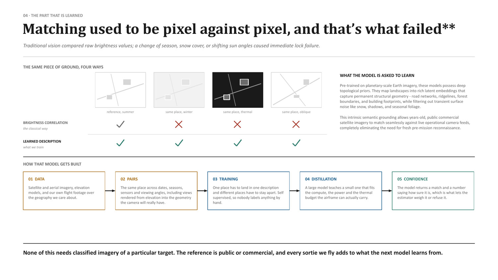

High-Speed GNSS-Denied Navigation
Satellite navigation signals are vulnerable to modern electronic warfare. Engineered for cruise missiles and jet effectors traversing 250+ metres per second, this subsystem integrates multi-element anti-jam CRPA nulling with real-time terrain contour referencing and AI-DSMAC optical correlation.
Why Mach 0.8 at 250+ m/s breaks commercial drone navigation
Low-speed commercial drones, ISR quadcopters, and slow loitering munitions operate in benign kinematic envelopes. At 40–50 m/s, optical sensors integrate light over standard exposures, tracking algorithms observe dozens of frames across a single feature, and processing latencies of 100 milliseconds introduce minimal position drift. In contrast, standoff cruise missiles operating at Mach 0.7–0.8 (240–270 m/s) fundamentally alter sensing physics.
| Engineering parameter | Commercial / ISR drone (55 m/s) | Hemlock cruise missile (250+ m/s) |
|---|---|---|
| Velocity / traverse rate | ~55 m/s (~200 km/h) | 250–270 m/s (Mach 0.8) |
| Latency sensitivity | 100 ms compute latency = 5.5 m drift | 10 ms compute latency = 2.55 m unguided transit |
| Ground motion blur | Standard 1/500s exposure acceptable | Requires ≤1/4000s global shutter + forward motion compensation |
| Terrain swath coverage | Slow, uniform nadir pass | High-rate swath: hundreds of square kilometres ingested per hour |
| Altitude variations | Nominal flat-ground AGL clearance | Himalayan valley contouring: thousands of metres relief in seconds |
| Inertial drift rate | Short 20–45 min sorties; <100 m total drift | 800–1,000 km transit (70+ min); tactical IMU drift exceeds 1.5 km |
At 250+ m/s, there is no margin for delayed frame ingestion or non-deterministic compute pauses. If an optical correlator takes 50 milliseconds to evaluate a terrain match, the missile has flown 12.5 metres past the calculated fix point. Apollyon's navigation architecture is engineered from the silicon up to guarantee sub-millisecond tensor processing and deterministic position updates at high subsonic velocities.

7-Element Controlled Reception Pattern Antenna (CRPA)
Satellite navigation signals arrive from 20,000-kilometre orbits at roughly -160 dBW. Ground-based electronic countermeasure stations emit multi-kilowatt broadband noise across entire combat sectors. A single passive antenna saturates instantly under this interference. Apollyon equips long-range effectors with conformal seven-element circular microstrip antenna arrays coupled to dedicated digital signal processors.
| Array configuration | 7-element conformal circular microstrip array |
| Frequency bands | NavIC L5 / S-band · GPS L1 / L2 · GLONASS L1 / L2 · Galileo E1 / E5 |
| Spatial null depth | > 45 dB attenuation toward ground emitters |
| Degrees of freedom | Suppresses up to 6 simultaneous independent jamming emitters |
| Threat envelope | Counters 200–250 km radius EW complexes (HQ IDS TPCR 2025 #33) |
| Spoofing rejection | Spatial coherence verification isolates single-point false emitters |
Radio-frequency spatial null steering
Rather than relying on analog radio filters, the digital signal processor performs real-time adaptive beamforming. The processor calculates complex phase weights at 20 Hz, steering steep spatial nulls—exceeding 45 dB attenuation—directly toward the azimuth and elevation of hostile ground emitters. Simultaneously, synthesized high-gain lobes track genuine satellites overhead. Because hostile jammers radiate from ground level while navigation satellites orbit at high elevation angles, spatial geometry allows robust signal extraction.
Adversaries often attempt false-constellation spoofing by injecting synthetic satellite clocks. A single-element receiver cannot isolate false signals from authentic broadcasts. The seven-element array measures the angle-of-arrival for every incoming satellite channel. If all constellation channels arrive along an identical bearing—characteristic of a ground transmitter—the flight computer rejects the radio fix within 50 milliseconds and hands navigation over to passive optical scene correlation.
High-speed AI-DSMAC scene correlation
When jamming intensity overwhelms radio receivers, the airframe shifts to passive vision. The onboard computer matches live optical frames and ground elevations against pre-stored satellite reference tiles.
TERCOM (Terrain Contour Matching)
A narrow-beam laser or radar altimeter samples ground clearance directly beneath the airframe. The system correlates this 1D elevation profile against an onboard digital elevation model, producing coarse horizontal coordinates in all weather conditions.
AI-DSMAC (Scene Area Correlator)
A forward-canted high-speed CMOS camera captures two-dimensional terrain imagery ahead of the weapon. A lightweight convolutional neural network extracts structural topological features, matching them against satellite reference tiles in under 15 milliseconds.
Invariant topological embeddings versus pixel correlation
Legacy DSMAC systems matched raw pixel intensities. They failed when seasonal snow covered mountain valleys or afternoon sun altered terrain shadows. Apollyon's neural correlator operates on learned topological invariants:
- Topological Priors: Neural networks learn structural geomorphology—ravines, cliff edges, ridgelines, road intersections, and permanent civil structures—while discarding transient variations such as snow dusting, crop cycles, and cloud shadows.
- Cross-Spectral Matching: Daylight satellite imagery loaded prior to flight matches directly against live night-time long-wave infrared (LWIR) or low-light visible camera streams.
- Lightweight Footprint: A complete 1,000-kilometre transit corridor across the Himalayas occupies under 150 MB of encrypted flash storage, transferring to the missile in 90 seconds over secure field data links.

Real-time Kalman filtering & information-driven routing
The guidance computer executes a tightly coupled Unscented Kalman Filter (UKF) at 1,000 Hz. The filter fuses tactical MEMS inertial measurements, barometric pressure, CRPA satellite fixes, and intermittent optical correlations into a continuous state estimate.
| Sensor | Measurement | Update rate | Operational role |
|---|---|---|---|
| Tactical IMU | Body rates & accelerations | 1,000 Hz | High-rate short-term propagation; smooths state between optical fixes. |
| CRPA Array | NavIC / GPS pseudorange | 10–20 Hz | Primary absolute position reference during non-saturated flight legs. |
| Altimeter (Laser / Radar) | Terrain clearance (AGL) | 50 Hz | Altitude validation and coarse TERCOM elevation profile matching. |
| AI-DSMAC Camera | Topological ground imagery | 10–30 Hz | Absolute horizontal position and yaw heading reset; zero drift. |
| Air Data Computer | Indicated & true airspeed | 50 Hz | Wind vector estimation and aerodynamic dynamic pressure validation. |
Information-density flight routing
Because optical fixes depend on recognisable landmarks, flight paths are planned around information density. Over featureless expanses such as open water or uniform salt flats, inertial drift compounds unchecked. Mission planning algorithms lay waypoints along mountain ridgelines, riverbeds, and highway interchanges. Each time the weapon traverses a verified landmark, the Kalman covariance corridor collapses to under 1.5 metres, maintaining terminal accuracy for impact.

Cross-platform deployment specifications
| Platform | Speed & flight regime | Navigation configuration | Terminal CEP |
|---|---|---|---|
| Hemlock family | Mach 0.7–0.8 (250+ m/s) · 800–1,000 km | 7-element CRPA (NavIC/GPS) + AI-DSMAC against 30 m DEM; under 150 MB route storage; terminal LWIR silhouette match. | < 1.5 m |
| Nightshade ADX-1 | 650+ km/h · 300 km (Mk II) | Multi-constellation anti-jam receiver + continuous optical odometry; autonomous terminal EO/IR homing independent of GNSS. | < 1.0 m |
| Piranha USV | 48+ knots · 800+ km sea transit | CRPA satellite receiver + coastline topological DSMAC matching + hydro-inertial dead reckoning. | < 2.0 m |
| Ahuti Interceptor | 498 km/h certified record · Short sprint | High-G tactical IMU coasting with ground-radar uplink correction; autonomous visual seeker terminal lock. | Direct collision |
Platforms carrying this subsystem
Supported by: Edge Compute & Custom Inference Engine, Seekers & Terminal Guidance.